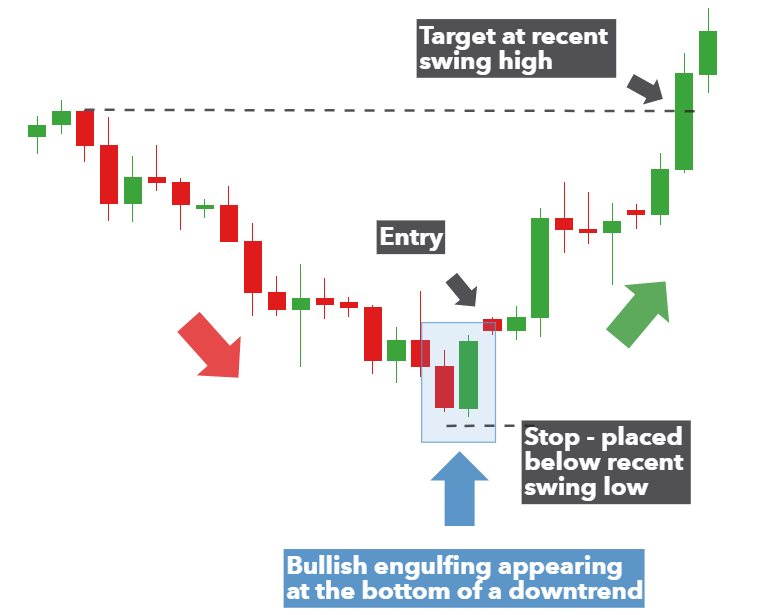

Eagle Forex Fundamentals
Powerful Heading
CANDLESTICK PATTERNS
Types Of Candlestick patterns
Bullish Engulfing
Bearish Engulfing
Gravestone Doji
Dragonfly Doji
Morning Star
BULLISH ENGULFING
The Immersing bar because it states in its title is shaped when it completely engulfs
the past candle. The overwhelming bar can immerse more than one previous candle, but to be considered an overwhelming bar, at slightest one candle must be completely devoured.
Example Of Bullish Engulfing
The bullish immersing bar comprises of two candlesticks, the primary one is the little body, and the moment is the inundating candle The bullish immersing bar design tells us that the advertise is not beneath control of venders, and buyers will take control of the advertise. When a bullish engulfing candle shapes within the setting of an uptrend, it demonstrates a continuation flag. When a bullish inundating candle shapes at the conclusion of a downtrend, the inversion is much more effective because it speaks to a capitulation foot
Bearish Engulfing
Typically how a bearish overwhelming bar design looks like on your charts, this candlestick design gives us valuable data almost bulls and bears within the advertise
In case of a bearish overwhelming bar, this design tells us that dealers are in control of the market. When this design happens at the conclusion of an uptrend, this demonstrates that buyers are overwhelmed by venders which signals a drift inversion.
As you'll be able see when this cost activity design happens in an uptrend, we can expect a drift inversion since buyers are not still in control of the advertise, and venders are attempting to thrust the advertise to go down. You can’t exchange any bearish candlestick design you discover on your chart; you will require other specialized instruments to affirm your passages.
The first body is smaller than the second one, in other words, the second body engulfs the previous one.